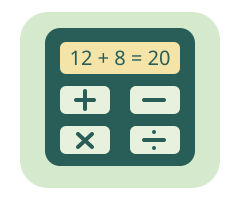

把方法想明白
數學小學堂挑戰 ＋ ×
拆開算式、看懂分數、解開生活任務。
不搶時間，想通比猜中更有趣。

今天想挑戰哪一種數學？
先選答案，再按「確認答案」；還沒想通也能先看解析。可重試，但會保留第一次作答結果。
約小三、小四程度的原創練習，非官方教材或完整課綱。小一、小二可先玩 數感冒險島。沒有倒數、帳號或排行榜；作答只留在本分頁，重新整理即清空，不儲存、不上傳。
挑戰完成
把想通的方法帶走。
首次結果與重試結果分開記錄；題數不是智力分數。展開每題，看看還能帶走哪個方法。